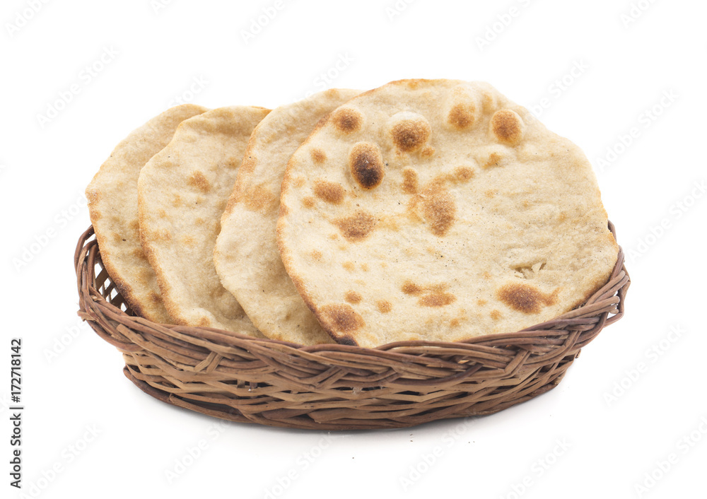

Roti

Roti is the best Indian Bread, even better than the more internationally popular Naan
About Roti
Tandoori roti stands out as the pinnacle of Indian bread, surpassing even its popular counterpart, naan, for several reasons. Firstly, its simplicity highlights the essence of traditional Indian cuisine, comprising just whole wheat flour, water, and salt. This minimalist approach accentuates the natural flavors and textures, making it a healthier choice. Additionally, the cooking method in a tandoor oven imparts a unique smokiness and charred aroma that elevates its taste to new heights. Tandoori roti's versatility shines as a perfect accompaniment to a wide range of dishes, offering a lighter, more wholesome option that embodies the authentic essence of Indian culinary heritage.
The Ingredients
- Whole wheat flour
- Water
- Salt
Lets Cook
- Prepare the dough by mixing whole wheat flour, water, and salt in a bowl until it forms a smooth and elastic dough.
- Divide the dough into small portions and roll each portion into a ball.
- Preheat a tandoor oven to high heat. If you don't have a tandoor, you can use a grill or a preheated oven set to its highest temperature.
- Flatten each dough ball into a round disc using a rolling pin, making sure it's not too thick.
- Place the rolled dough onto a slightly damp cloth to prevent it from sticking.
- Transfer the rolled dough onto the hot tandoor oven or grill.
- Cook the roti, flipping occasionally, until it puffs up and develops charred spots on both sides. It should take about 2-3 minutes per side.
- Once cooked, remove the tandoori roti from the oven and brush it with ghee or butter for added flavor.
- Repeat the process with the remaining dough balls.
- Serve the tandoori roti hot with your favorite curry or dish.